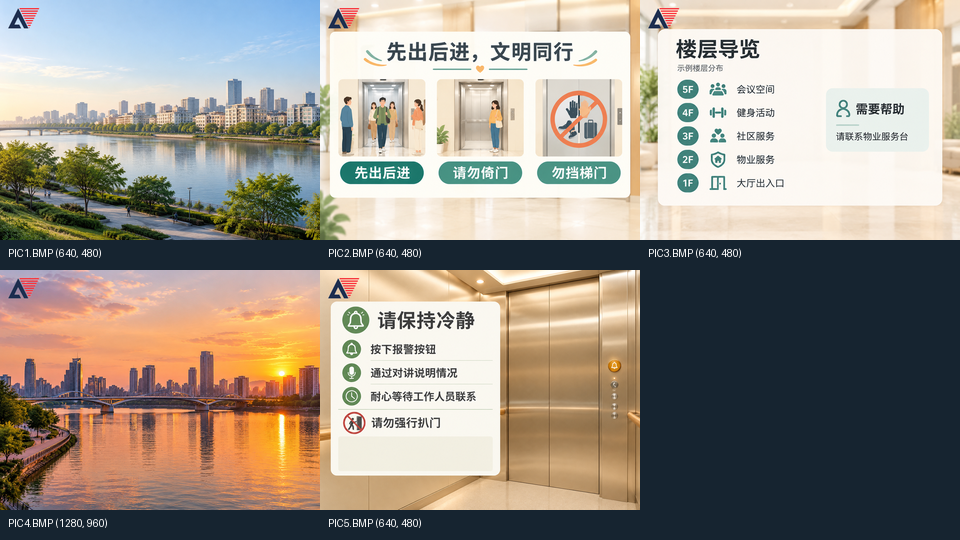

梯间守望演示视频拍摄 SOP
用 3 分钟讲清楚：电梯轿厢日常发布信息，告警时优先显示安抚提示，向接收端主动上报，经人工确认和触发源解除后恢复日常播放。
按“开场 → 基础功能 → 扩展功能 → 场景闭环 → 总结”剪辑。先拍功能素材，最后连贯拍场景；配音后录。板卡、HDMI 屏和串口上位机共同出镜，上位机承担演示输入与接收确认，图像和音频由 FPGA 输出。
1 开拍准备
1.1 先冻结拍摄版本
当前可查到 10 月 30 日的隔离候选 build_out/final_repair_candidate_20261030_21/best_result，其 140 个 user_source 文件与当前源码逐文件一致；BIT SHA256 为 d329a9bcdc4149515aa835f2c3fd871a0f52231d0c96be14c7eecc693ebd8ecb。该候选报告仍写明待实板验收；原生 TD 的 best_result BIT 是另一散列。先确认板上究竟使用哪一份，再引用对应报告，不因目录名称认定已经烧录。
1.2 准备本次场景素材
| 素材 | 当前画面 | 拍摄用途 |
|---|---|---|
| PIC1 | 白天城市滨水景观，640×480 | 开场和日常宣传页 |
| PIC2 | 先出后进、请勿倚门、勿挡梯门，640×480 | 说明日常文明乘梯宣传 |
| PIC3 | 楼层导览与物业帮助，640×480 | 场景段主要停留页；体现便民信息 |
| PIC4 | 夕照城市景观，1280×960 | 展示大图输入经 2×2 平均缩小，输出仍为 640×480 |
| PIC5 | 请保持冷静、按报警按钮、耐心等待，640×480 | 仅应急时出现；拍清下方通信状态、安抚文字和事件编号 |

当前素材位置：C:/Users/wzl123/.config/micu-image/output/tijian_sunburst_20261029_141512/bmp_fpga。核对 FAT32 卡根目录为 PIC1.BMP～PIC5.BMP。PIC1～4 日常轮播，PIC5 留给应急。不要为了镜头临时换卡或现场处理图片。
1.3 布景与录制检查
2 操作速查
| 控件 | 当前操作 | 拍摄注意 |
|---|---|---|
| SW1 | 滚动字幕开关 | 开/关各停留 2 秒，让文字层变化可辨认 |
| SW2 | 中文参数菜单开关 | 每次打开从亮度开始；菜单会临时隐藏波形 |
| SW3 | 音频时域波形层开关 | 它控制显示，不负责开声；不要称 FFT 频谱 |
| SW4 | 本地告警触发／解除 | 主场景只用本地来源，避免串口告警残留造成不能解除 |
| K1 | 复位 | 主场景不按；SW4 保持开启时复位后仍可能告警 |
| K2 短按 | 普通界面下一张；菜单增加；缩略图下一格 | 一次按下、释放、等画面稳定，再进行下一步 |
| K3 短按／长按 | 普通界面自动/手动切换／上一张 | 长按可按约 1.2 秒排练；短按不要拖成长按 |
| K4 短按／长按 | 普通界面静音/恢复／进入缩略图 | 缩略图中短按确认、长按取消 |
| 菜单 K4 短按 | 依次选亮度、对比度、音量、周期、诊断、重载 | K2/K3 调整；本次只拍常用数值项，不误触维护操作 |
| K2+K3 同按 3 秒 | 显式保存参数 | 独立备拍；先读到真实保存成功反馈再松开，双键都释放 |
| 上位机“收到响应 · ACK” | 确认当前求援事件 | 等设备回读为 ACKED；告警仍有效 |
拍每项功能前回到约定状态：SW2=0、SW4=0，手动播放；SW1/SW3 按该镜头需要设置。音量及图号以屏幕实际读数为准。拍自动轮播前可在菜单把周期设为 2 秒，字幕也写实测所用周期。
3 镜头时间表
成片目标 180 秒。保留 PPT 五段式，把扩展段增加到 50 秒，基础段 25 秒，场景段 75 秒；用于让现有五项拓展和缩略图都看得清。每条原片前后多录 3～5 秒，下面的时长是剪入成片的时长。
| 段落 | 成片区间 | 时长 | 要让评委看到 |
|---|---|---|---|
| 开场 | 00:00～00:10 | 10 秒 | 名称、场景、板卡与屏幕 |
| 基础 | 00:10～00:35 | 25 秒 | TF 读图、HDMI、手动、自动、音频 |
| 扩展 | 00:35～01:25 | 50 秒 | 转场、字幕、波形、参数、缩小、缩略图 |
| 场景 | 01:25～02:40 | 75 秒 | 日常→告警→超时/确认→解除→恢复 |
| 总结 | 02:40～03:00 | 20 秒 | 三项亮点与同版数据 |
01 开场 00:00～00:10
画面：固定全景：板卡、HDMI 线和正在播放 PIC1 的显示器。标题叠加 3～5 秒；末尾用一个屏幕近景接入功能段。
字幕：梯间守望｜基于安路 EG4S20 的电梯信息与应急提示终端。
口播：“各位评委老师好，我们的作品是《梯间守望》，一款电梯信息发布与应急提示终端。”
02 TF 读图与 HDMI 00:10～00:17
动作：先拍未上电时已插好的 TF 卡近景，再拍同一板卡启动后首图。保留完整启动原片；若加载超过剪辑预算，选取出图过程，并标“启动过程节选”，不配启动耗时。
字幕：基础功能 1/2｜FAT32 TF 卡读取 BMP｜HDMI 640×480。
完成标志：PIC1 内容稳定完整。不要在带电运行中插卡来替代冷启动镜头，也不把电脑图片窗口当成 HDMI。
03 手动切换 00:17～00:23
动作：手动状态 K2 短按下一张，稳定后 K3 长按回上一张。手部与屏幕尽量同框；可用小画面补手部特写。
字幕：基础功能 3｜K2 下一张 / K3 长按上一张。
04 自动轮播 00:23～00:30
动作：已设 2 秒周期，K3 短按进入自动，拍至少两次真实切换。结束后再短按回手动。
字幕：基础功能 4｜自动轮播，周期 2 秒（以本次实际设置为准）。
05 音频输出 00:30～00:35
动作：K4 短按恢复声音，保留 2～3 秒实际测试音；此时 SW3 关闭，证明波形开关不负责开声。
字幕：基础功能 5｜48 kHz HDMI 音频｜FPGA 合成音调。
收音：优先用采集卡的真实 HDMI 音频；没有采集卡时单独录屏幕扬声器的声音。此处配音停顿，音乐关闭。
06 转场 00:35～00:43
动作：K2 触发一次切图，从按下前录到目标图稳定，给完整转场过程。展示当前实板实际出现的淡出/揭示效果。
字幕：扩展功能 1｜硬件图像转场。不要把后期剪辑转场或单图淡出宣传为双图实时混合。
07 OSD 与滚动字幕 00:43～00:51
动作：在同一画面中 SW1 关闭约 2 秒，再打开约 4 秒；拍清中文字幕和顶部楼层/方向/门状态。
字幕：扩展功能 2｜OSD 状态与滚动字幕。楼层标“串口演示输入”。
08 真实 PCM 时域波形 00:51～00:59
动作：有声时 SW3 开启，等波形出现；K4 静音，等波形归零；再次 K4 恢复。若实测显示滞后，适当延长并从其他镜头挪时间。
字幕：扩展功能 3｜输出 PCM 时域波形｜静音归零。保留对应的真实声音。
09 中文参数菜单 00:59～01:11
动作：SW2 打开；亮度选中，K3 减少 2～3 档，停 2 秒，再 K2 恢复；K4 选下一项让焦点变化可见；SW2 关闭。
字幕：扩展功能 4｜中文参数菜单｜亮度/对比度/音量/周期。只解说本镜头真实演示的调节结果。
完成标志：高亮行、数值和画面变化同时看清。不要一路按到“重载”而打断演示。
10 两种输入尺寸 01:11～01:19
动作：预先到 PIC3，K2 切至 PIC4；用屏幕实录展示夕照城市图。可叠加素材属性小图，表明该 BMP 为 1280×960。
字幕：扩展功能 5｜640×480 直接显示；1280×960 经 2×2 平均缩小到 640×480。
当前 PIC1 与 PIC4 内容不同，本镜头证明两种尺寸均可播放；若要比较缩小画质，另拍同内容双尺寸对照。不要写“HDMI 输出 1280×960”或“任意分辨率适配”。
11 缩略图选择 01:19～01:25
动作：K4 长按进入缩略图，K2 移动一格，K4 短按确认。原片可录 12 秒，从中保留焦点移动和返回全屏的完整动作。
字幕：附加交互｜缩略图选图。若 6 秒内看不清，优先放入备拍，不挤掉五项核心扩展。
4 场景连续拍
这一段是全片重点。手机拍摄板卡和 HDMI 屏，PC 同时录真实串口上位机，连续录制约 90～120 秒原片，再取其中 75 秒。电脑与板卡画面通过拍手对齐；保留本地触发、同一事件编号、确认、解除这一条因果链。
4.1 场景开始前复位到约定状态
- SW2=0、SW4=0；需要字幕时 SW1=1；建议 SW3=0，让主要画面简洁。确认没有残留串口告警。
- 双击根目录
start_console.cmd，选本板真实 COM 端口，115200、8N1；关闭其他占用该端口的程序。COM18 是既往记录，现场以实际枚举和设备回读为准。当前程序自动完成会话与 CRC 封装，等待连接握手成功，不使用旧裸 ELEV/ACK 命令。 - 上位机自动确认关闭；确认设备状态新鲜、无有效告警。上电若显示“已解析·待初始化 / F00”，点击“初始化演示”，等待有效楼层回读。
- 选择 1～5 层往返，点击“开始演示”；当前程序按约 2 秒计划更新楼层。PC 录屏保留“演示输入 / UART 实机连接”来源标识。
- FPGA 进入日常自动轮播；最好从 PIC3 楼层导览开始。让日常轮播、楼层模拟和告警接收分别先跑通。
| 成片时间 | 操作者动作 | 屏幕与上位机应出现 | 字幕/配音重点 |
|---|---|---|---|
| 01:25～01:40 日常 15 秒 | 保持日常轮播；上位机楼层往返运行。用屏幕为主，PC 画面为辅。 | PIC1～4 中的日常页；楼层和方向随演示输入变化；无有效告警。 | “日常播放乘梯提示、楼层导览与社区宣传。楼层由串口演示输入提供。” |
| 01:40～01:53 触发 13 秒 | 将 SW4 开启；手离开，保持开关不变。先给 2 秒手部，再拍应急页和 PC 事件。 | FPGA 优先显示 PIC5、必要告警文字和提示音；上位机新增活动事件、暂停楼层演示。人工不确认时约 3 秒后可出现 TIMEOUT。 | “本地触发后，应急提示优先显示，并主动上报求援事件。未收到确认时有限重发，并提示确认超时。” |
| 01:53～02:13 人工确认 20 秒 | 先对准事件编号，再点击“收到响应 · ACK”；等待设备回读，保持 SW4 开启，给板端与 PC 各 3～5 秒清晰画面。 | 同一活动事件由 WAIT 或 TIMEOUT 转为 ACKED；上位机显示已确认但告警仍有效；PIC5 仍在。 | “人员收到信息后进行确认。设备接受确认，但告警仍然保留。” |
| 02:13～02:28 解除 15 秒 | SW4 关闭，不按 ACK 替代解除。观察恢复；上位机仍暂停时再点“继续”。 | 本地来源解除，A=0 恢复事件出现；屏幕回到日常图和原播放状态。恢复事件可使用新 ID。 | “解除触发源后，终端恢复日常播放。楼层演示由人员确认后继续。” |
| 02:28～02:40 恢复 12 秒 | 保持日常轮播；拍 PIC2/PIC3 或完整全景，不增加新操作。 | 日常画面、楼层演示和上位机无活动告警状态一致。 | 字幕依次收束：日常发布 → 应急提示 → 人工确认 → 解除恢复。 |
连续性检查：求援与确认的 ID 必须一致；A=0 恢复消息是独立事件，编号变化正常。主场景不用 ALERT=ON，避免本地和串口双来源叠加。若出现双来源，必须两种来源都解除才恢复；ACK 不解除告警，也不代表救援已到场。
重拍时，从 SW4=0、无远端告警、已恢复日常状态重新开始。不得拿另一轮事件的“已确认”画面拼接当前求援，或用 SIM 页面补作实板接收画面。
5 本人口播与提词
建议开场和结尾本人出镜，中间使用实物画面配你的声音。以下按原3分钟镜头表逐句安排。先介绍作品用途，再展示功能，最后讲清应急流程。操作前说要展示什么，操作后等真实状态出现，再说结果。
下方“口播”可以照念；“画面”和“提示/停顿”不读。每段单独录，句子之间自然停顿。型号、分辨率和资源数字主要放字幕，不必全部念出来。打开独立口播提词稿，其中另附约30秒作品介绍。
01 开场介绍 00:00～00:10
画面：本人出镜，身旁能看到作品；也可直接使用板卡与屏幕全景。
提示：说到作品名称略停一下，视线看镜头。完整型号“安路EG4S20”放标题字幕。
02 TF读图与HDMI输出 00:10～00:17
画面：TF卡近景、真实屏幕首图。
提示：指向板卡和屏幕即可，不在这里展开存储器、时钟和接口细节。
03 手动切图 00:17～00:23
画面：K2下一张、K3长按上一张。
停顿：讲完留约1秒，拍清按键后的画面变化。
04 自动轮播 00:23～00:30
画面：开启自动模式，拍两次实际切换。
停顿：保留切图过程；本次若设2秒，字幕写“轮播周期2秒”。
05 音频 00:30～00:35
画面：K4恢复声音。
停顿：剩余时间保留真实设备音，配音和背景音乐让开；字幕写“48kHz HDMI合成音频”。
06 硬件转场 00:35～00:43
画面：一次完整切图转场。
停顿：等目标图稳定后，再进入下一句。转场必须来自FPGA实际输出。
07 字幕与状态叠加 00:43～00:51
画面：SW1开关字幕、顶部楼层与方向状态。
提示：字幕注明楼层为演示输入；后面的场景段会口头解释来源。
08 输出波形 00:51～00:59
画面：SW3开启波形、K4静音归零、再恢复。
停顿：说“静音后”时配合K4操作，给归零和恢复各留出清晰画面与设备原声。
09 中文参数菜单 00:59～01:11
画面：SW2进入菜单，调整亮度并恢复、切换焦点。
停顿：降低亮度后停约2秒，再恢复，别一口气按完。
10 大图缩小 01:11～01:19
画面：播放1280×960的PIC4，叠加输入与输出尺寸字幕。
提示：用字幕说明“1280×960→640×480，2×2平均缩小”，不用赶着念完整数字。
11 缩略图选择 01:19～01:25
画面：进入缩略图、移动焦点、确认。
提示：若主片删去此备选镜头，这句也一起删去。
12 引入应用场景 01:25～01:40
画面：日常轮播，上位机楼层演示运行。
提示：不把模拟楼层说成真实电梯传感器采集；画面保留真实串口连接标识。
13 告警与超时 01:40～01:53
画面：SW4触发应急页、提示音；上位机收到事件。
停顿：第一句后操作SW4；应急提示音响起时暂停口播。若实拍未进入超时，删去最后一句，不为配合稿件伪造状态。
14 人工确认 01:53～02:13
画面：对准事件编号，点击“收到响应·ACK”，等设备回读ACKED。
停顿：点击后等回读再说“已确认”；保持SW4开启，让评委看清应急页没有被ACK关闭。
15 解除与恢复 02:13～02:28
画面：SW4关闭、恢复消息、日常页面；上位机点击继续。
停顿：先操作并看到真实恢复，再念对应结果，保留A=0恢复事件画面。
16 收束场景 02:28～02:40
画面：恢复后的日常轮播和上位机状态。
停顿：说完留几秒稳定画面，不加新的功能操作。
17 结尾总结 02:40～03:00
画面：本人出镜或完整作品全景；资源数据放侧边字幕。
提示：不用口头罗列所有资源数字；只展示实际录像BIT对应的工具报告数据。
整段围绕“日常发布 → 应急提示 → 人工确认 → 解除恢复”。“已确认”和“已恢复”都等设备真实变化后再说；不把模拟楼层说成真实传感器数据，不把接收确认说成救援到场。
同版资源数据如何放在结尾
若实际录像用的正是 candidate_21 BIT，可在 20 秒总结画面中用侧栏展示下表，并配一句“本次隔离候选已完成布局布线，资源和时序见屏幕”。如果板上使用的是原生 TD 的不同 BIT，则改用它自身报告。连续运行时长、启动耗时只写本次实际测量记录，未测就省略。
| candidate_21 报告项目 | 原始值 | 画面可用写法 |
|---|---|---|
| LUT | 18425 / 19600 | 94.01% |
| REG | 9524 / 19600 | 48.59% |
| Slice（route.qor 口径） | 9785 / 9800 | 99.85% |
| ERAM9K | 27 / 64 | 42.19% |
| DSP | 17 / 29 | 58.62% |
| 布线后时序 | SWNS +0.409 ns；HWNS +0.023 ns | STNS / HTNS 均为 0 |
数据取自该候选的 lab_ex5_i2s_v1.0_phy.area、route.qor 与 final_timing.rpt。同目录 BOARD_ACCEPTANCE.md 的手写 LUT/MSlice 汇总与工具报告不一致，拍摄采用上表工具原始数据；不要混用不同资源单位，也不要把资源用满描述为低资源。该候选的 hardware_tested=false，不能直接据此写“连续稳定运行两小时”或“十次冷启动通过”。
6 机位与收音
6.1 最少设备方案
一部手机＋固定支架＋PC 录屏：手机固定拍板卡和屏幕；PC 录上位机。先拍一个能看清硬件连接的全景，再把手机移到正对屏幕的近景位置。功能段以屏幕为主，按键/拨码用同框或补拍手部；场景段连续录手机和 PC，不需要第二部相机。
有 HDMI 采集卡：用采集到的真实 FPGA 视频和音频作为细节镜头。若有环出/分配器，可同时接显示器；若没有，先验证采集链支持当前 640×480，再决定单独补录。保留手机全景证明板卡连接，避免成片全部像软件录屏。
6.2 屏幕如何拍清楚
- 屏幕保持 4:3 比例，成片画布 16:9。单屏镜头左右留边，可放功能名；双画面可让 HDMI 占约三分之二，PC 占其余区域。若编号太小，就顺序切近景，不强行双画面。
- 对着屏幕锁定曝光、焦点和白平衡，避免白底页面忽明忽暗。先调显示器位置和灯光，减少反射，再调整手机曝光。
- 先测试常用的 25/30 fps；有条纹时，在专业模式尝试 1/50、1/60、1/100 或 1/120 秒快门，逐项试录并选条纹最少的组合。屏幕刷新、灯光和滚动快门都会影响结果，没有统一必然正确的一档。
- 有摩尔纹时稍微改变拍摄距离或焦距，使用主摄，尽量少用数字放大；保持字幕可读。每次调整后立即回放。
- 真实 HDMI 内容只有 640×480；导出 1080p 后不能新增细节，画面模糊时先解决拍摄和比例，不靠锐化滤镜补救。
6.3 声音安排
配音在安静房间分段录制，手机离嘴约 20～30 厘米，避开正对气流；用耳机回听。测试音、波形静音/恢复和应急提示这三处，保留对应设备原声。背景音乐可不加；若使用，压低到不影响解说，展示设备音效时关闭。不要用后期音效替代设备真正输出的声音。
7 剪辑与交付
7.1 按这个顺序拍，返工最少
- 先做 10 秒画质和声音小样，解决条纹、反光和声音问题。
- 固定全景机位，录开场全景、TF 卡近景和本地开关动作。
- 固定屏幕机位，按镜头 02～11 逐项拍。每条至少两次；每拍完一条就回放核对预期结果。
- 手机和 PC 同步录场景段。完整拍两遍，选一遍同一事件的闭环素材剪辑。
- 补结尾全景和同版资源报告画面，再录配音。
- 按 180 秒时间表组装，先剪动作和结果，再加配音、功能字幕与少量必要转场。
7.2 字幕统一写法
功能名用左上角或上方留白，步骤说明放画布下方，避开 FPGA 顶部楼层条、底部滚动字幕、PIC5 下方通信状态与事件编号。1080p 画布可先试 36～44 px 字号、一次最多两行，再用手机全屏回放检查可读性。关键编号和 ACKED/TIMEOUT 状态出现时至少留 2～3 秒。
7.3 提交前逐项打勾
建议素材文件夹：01_全景 / 02_基础 / 03_扩展 / 04_场景连续 / 05_上位机录屏 / 06_配音 / 07_成片。文件命名如 04_本地告警_ACK_解除_take02.mp4，同一轮手机和 PC 片名使用同一 take 编号。
8 备拍与排障
8.1 这些镜头单独拍，主片有余量再用
| 备拍 | 完整动作 | 采用条件 |
|---|---|---|
| 参数保存 | 调参数 → K2+K3 同按 3 秒 → 真正保存成功 → 两键释放 → 冷启动 → 回菜单核对参数 | 全部真实跑通才说掉电保留；配置 Flash 自启与参数 Flash 保存分开说明 |
| 媒体异常 | 另备故障素材卡，展示无有效图/缺 PIC5 时备用提示与人工重载恢复 | 放在主场景拍完后，使用已演练的独立片段，先备份正常卡 |
| 启动计时 | 供电动作到完整首图连续录制；另存 BOOT? 内部里程碑 | 两个计时起点与终点不同，分别标注；有时间证据才填数字 |
| 运行记录 | 同一 BIT 保留运行起止时间、全程日志和操作记录 | 长时结果必须真实完成，不能用短片循环或加速画面证明时长 |
8.2 现场遇到问题时
| 现象 | 先检查 |
|---|---|
| 没有声音 | 复位后通常静音；K4 恢复、菜单音量、显示器音频支持、系统录音设备。SW3 只是波形开关。 |
| 关闭 SW4 还在告警 | 是否残留远端 ALERT 来源；先停拍，核对来源和真实状态，必要时用上位机正常解除串口来源，再重拍整轮。 |
| 点击 ACK 没有恢复日常 | 这是预期行为。先确认回读 ACKED；解除触发源才恢复。若 ACKED 未出现，核对活动 ID、日志和连接。 |
| 出现 TIMEOUT | 人工确认超过约 3 秒可正常进入超时。按预演的迟到 ACK 流程拍；若无法确认，停拍排障。 |
| 上位机楼层显示 F00 | 待初始化状态不等于真实 0 层。使用初始化演示并等回读，不连续发送旧 ELEV 命令强行覆盖告警。 |
| 解除后楼层不继续动 | 上位机告警后暂停，需人工点击“继续”；FPGA 的图片轮播和 PC 的楼层演示是两套状态。 |
| 菜单出现后波形消失 | 菜单临时隐藏波形是预期；关闭 SW2 后按 SW3 请求恢复。 |
| PIC4 图片比例不对 | 确认文件为 1280×960，接收端保持 4:3，剪辑画布没有横向拉伸。 |
8.3 拍摄登记表
拍摄日期 / 操作者： 实际 BIT 绝对路径 / SHA256： 烧录或配置 Flash 记录： TF 卡 / PIC1～PIC5 清单： 显示器 / HDMI 采集设备： 真实串口端口 / 上位机版本： 原片 take 编号 / 求援 ID： 本次实测启动 / 运行记录（无则留空）： 最终成片文件 / 时长 / 导出参数：